История Окей
1) История проекта, который позже эволюционировал в группу "Окей", началась 26 августа 2022 года в Челябинске. Именно там, после рабочей смены на Челябинском трубопрокатном заводе (ЧТПЗ), Ковбой Раф Евро (он же!) и Павел Ротгар Михайлов решили дать волю своему творческому порыву. За кружкой пива и под гитарные импровизации в доме Павла родился спонтанный творческий дуэт, получивший название "Ковбой Раф Евро и Индеец". Примечательно, что к моменту создания дуэта и у Павла, и у Ковбоя уже был накоплен определенный багаж собственных музыкальных композиций. Именно эти наработки и легли в основу их совместного творчества, став отправной точкой для формирования будущего репертуара. В тот период они экспериментировали, пытаясь объединить свои индивидуальные музыкальные идеи и найти общее звучание в формате гитарного дуэта. Возможно, именно тогда появились первые аранжировки существующих композиций или наброски совершенно новых треков, которые впоследствии стали визитной карточкой группы "Окей".
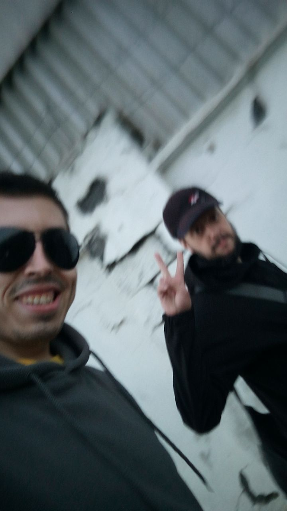
📸 У стены ЧТПЗ, 26 августа 2022. Начало всего.2) Вскоре после образования дуэта "Ковбой Раф Евро и Индеец" творческий процесс забурлил с новой силой. В совместных музыкальных сессиях стали рождаться совершенно новые композиции, отражающие их общее видение и музыкальные эксперименты. Среди этих песен были такие треки, как "Кантри панк рок", возможно, смелый сплав казалось бы несовместимых жанров, "Попутчик", навевающий образы дорог и приключений, "Про Кота", вероятно, с юмористическим или лирическим взглядом на пушистого друга, "Душа Ковбоя", раскрывающая внутренний мир одного из основателей, "Простой Человек", затрагивающая близкие каждому темы, и загадочный "Параллельный Мир", обещающий слушателям необычные звуковые ландшафты. Эти новые песни, наряду с сольными композициями "Про шута", "Ковбойская" и "Рейнджер Страж", начали формировать эклектичный и самобытный репертуар дуэта. В процессе их создания Павел и Ковбой активно обменивались идеями, вместе работали над аранжировками, пытаясь найти гармоничное сочетание своих музыкальных стилей и предпочтений.
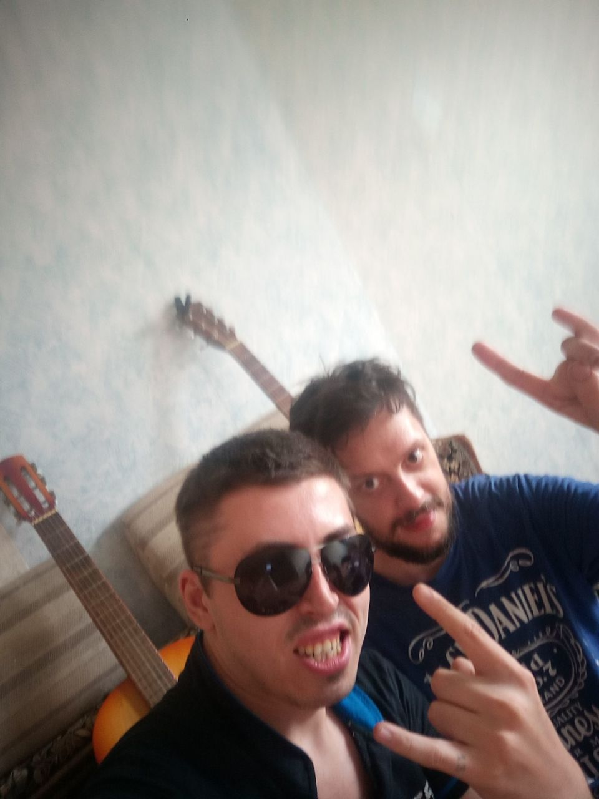
📸 Ковбой и Павел — основатели.3) В период становления дуэта "Ковбой Раф Евро и Индеец" важную роль в их звучании играли инструменты Павла Ротгара Михайлова. Его основными рабочими лошадками были электроакустическая гитара Fender FDC60 и классическая гитара "Кунгур", вероятно, знаковый инструмент с интересной историей. Позже, стремясь к более насыщенному и разнообразному звучанию, Павел привез еще одну электрогитару Phil Pro. Эти инструменты стали неотъемлемой частью их творческого поиска и первых музыкальных экспериментов.
4) Дуэт "Ковбой Раф Евро и Индеец" продолжал свои гитарные эксперименты, но чувствовали, что их музыке не хватает определенной искры. И вот, судьба свела их с соседом Павла, Андрюхой, известным также как Белый Джинн. Как оказалось, Белый Джинн был не просто знаком с музыкой — он был отменным гитаристом, чье мастерство значительно превосходило навыки Павла и Ковбоя. Его талант стал той самой недостающей частью пазла. Вскоре после присоединения к репетициям стало очевидно, что Белый Джинн займет место соло-гитариста. Его виртуозные соло вдохнули новую жизнь в существующие композиции, добавив в некоторые из них настоящего "огня".
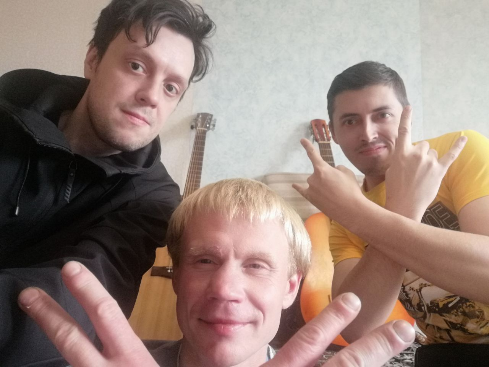
📸 Афиша с участием Белого Джинна.5) С приходом Белого Джинна и появлением ярких гитарных соло звучание коллектива стало более насыщенным и энергичным. Естественным шагом стало желание представить свою музыку публике. Первые выступления "Ковбоя Рафа Евро и Индейца" (уже с участием Белого Джинна) состоялись на квартирнике "Свобода 2 фарм". Эти четыре выступления стали важным опытом для музыкантов. Они позволили почувствовать реакцию слушателей на свои песни, отточить сценическое мастерство и, вероятно, получить первый заряд живой энергии от взаимодействия с аудиторией.
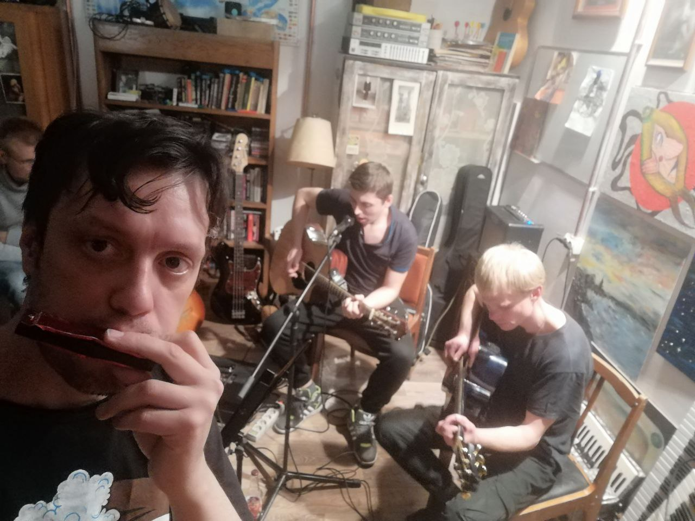
📸 Квартирник "Свобода 2 фарм".6) Именно там, на одной из этих встреч, организатор мероприятия, Ваня Ленков, поинтересовался у музыкантов: "А как же называется ваша группа?" Наступила небольшая пауза. До этого момента коллектив существовал скорее как творческое объединение, нежели как официально названная группа. И тут Ковбой, не растерявшись, экспромтом выпалил: "Все Окей, броооо!!!!" Эта фраза, произнесенная с непринужденной уверенностью, неожиданно пришлась всем по душе. В ней чувствовалась какая-то легкость, позитивный настрой и, возможно, ирония по отношению к самим себе. Так, благодаря спонтанному ответу на простой вопрос, родилось название группы – "Окей".
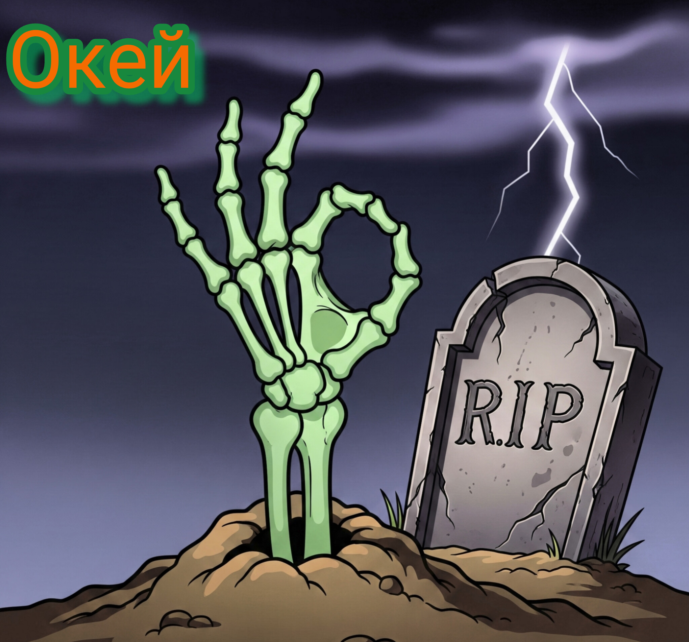
📸 Момент рождения названия — "Всё Окей, броооо!"7) Идея названия "Окей", спонтанно брошенная Ковбоем на квартирнике, не сразу прижилась в коллективе. Уже позже, на репетиции у Павла дома, вновь возник спор. Белый Джинн по-прежнему настаивал на более "серьезном" варианте "Проект Диссонанс", выражая свое недоверие к "такому мощному и гениальному названию, как Окей", по мнению Ковбоя.
8) Хотя некоторые песни, которые приносил Белый Джинн, были, по словам Ковбоя, "неплохие" — среди них упоминаются "Молитва", "Уберегай Меня" и "Любовь к искусству" — они все же не вписывались в первоначальную задумку группы. Павел и Ковбой имели определенное представление о том, в каком направлении должна развиваться их музыка, и эти композиции, вероятно, отклонялись от этого курса.
9) После ухода Белого Джинна группа "Окей" сфокусировалась на своем звучании и, как оказалось, не зря. Выступление на гитарнике в крафтовой кофейне стало настоящим триумфом. По словам Ковбоя, публике просто "понравилось, как мы бахнули". Эта честная и прямолинейная оценка говорит о той необузданной энергии и драйве, которые группа "Окей" смогла передать своим слушателям. Особенно запомнилось исполнение песни "Изумрудный город", вызвавшее, судя по всему, настоящий фурор.
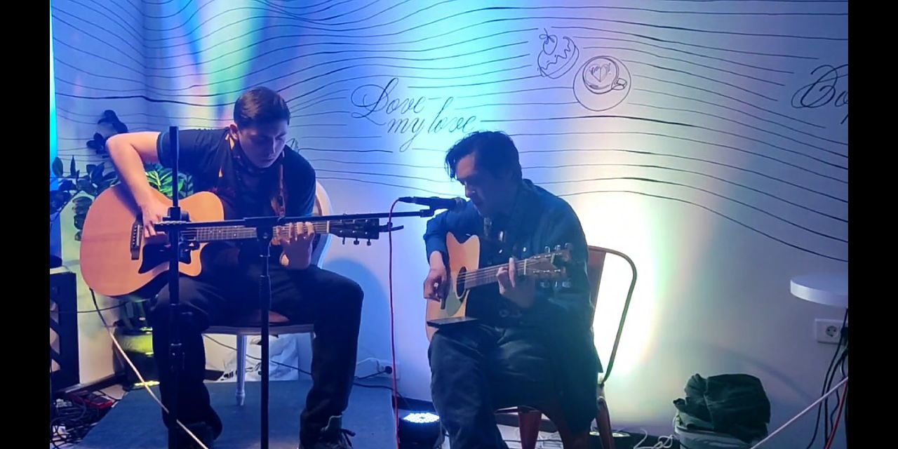
📸 Гитарник в крафтовой кофейне. "Изумрудный город" — фурор!10) После триумфального выступления в крафтовой кофейне, где группа "Окей" покорила публику своей энергией, наступил период качественного скачка в плане оборудования. Ковбой стал счастливым обладателем Gibson, чье звучание добавило благородства и мощи гитарным партиям. В свою очередь, Павел приобрел ламповый усилитель Ерасов GTA-40, который наполнил звук гитары теплотой и характерным "ламповым" драйвом.
11) Вслед за "Хиповской жизнью" в репертуаре группы "Окей" появилась песня "Усталый рокер". В отличие от более энергичных композиций, эта песня, по словам Ковбоя, была "не сильно мощная, средненькая". Возможно, это была более лиричная или меланхоличная баллада, разбавляющая бунтарский дух кантри-панк-рока.
12) "Корпус Смерти Крига" прошла интересную трансформацию! Из сольной акустической композиции она постепенно, со временем, обрела новое звучание и стала настоящим рок-хитом. Далее к группе присоединился Леха. А чуть позже он стал Леха Панк!!!
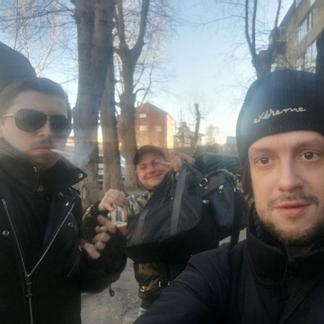
📸 Ковбой, Павел и Лёха Панк — троица.13) В тот период группа "Окей" сосредоточилась на записи видео с репетиций и выкладывала их на YouTube под названием "Ковбой Раф Евро". Особой онлайн-реакции эти публикации не вызвали, однако привели к неожиданному локальному эффекту: Леха Панк стал узнаваем среди своих коллег на Челябинском трубопрокатном заводе. Несмотря на скромные просмотры в сети, его участие в этих видео сделало его своего рода местной знаменитостью.
14) После периода публикаций репетиционных видео на YouTube в группе "Окей" произошли значительные перемены. Павел Ротгар Михайлов, один из основателей коллектива, принял решение покинуть группу. Он сменил музыкальное направление и стал заниматься "бардовским фуфлом".
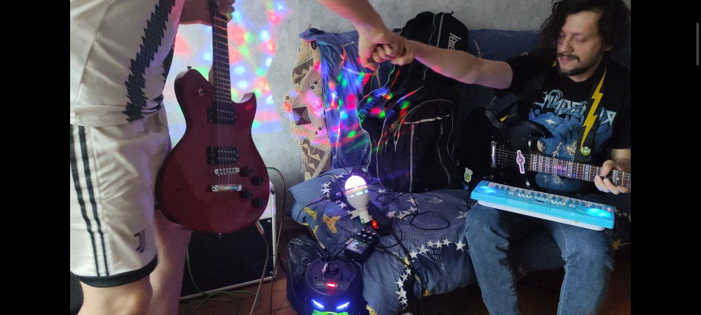
📸 Павел уходит в "бардовское фуфло".15) Однако уход Павла не сломил оставшихся участников, а подтолкнул к новым творческим поискам. Ковбой объявил о рождении нового музыкального жанра — Супер Панк, который стал эволюцией их кантри-панк-рок звучания в сторону более тяжелого и "рок-н-ролльного" направления. Леха Панк поддержал эту идею. Ковбой приобрел новый ламповый комбоусилитель Ibanez TSA15, который существенно повлиял на формирование звучания Супер Панка.
16) Вскоре после этого произошла случайная встреча Ковбоя у алкомаркета "Красное & Белое" с еще одним музыкантом — Серёгой, который носил прозвище "Ковидный" из-за шарфа группы "Король и Шут", как и у Ковбоя. Серёга оказался гитаристом и вокалистом, и его реакция на Супер Панк была восторженной: "Это заебись!". Он быстро присоединился к группе "Окей" и получил новое прозвище — Птеро — после того, как проявил себя с "птеродактилиным" криком в новой песне Ковбоя "Юрский Движ", посвященной динозаврам-рокерам.
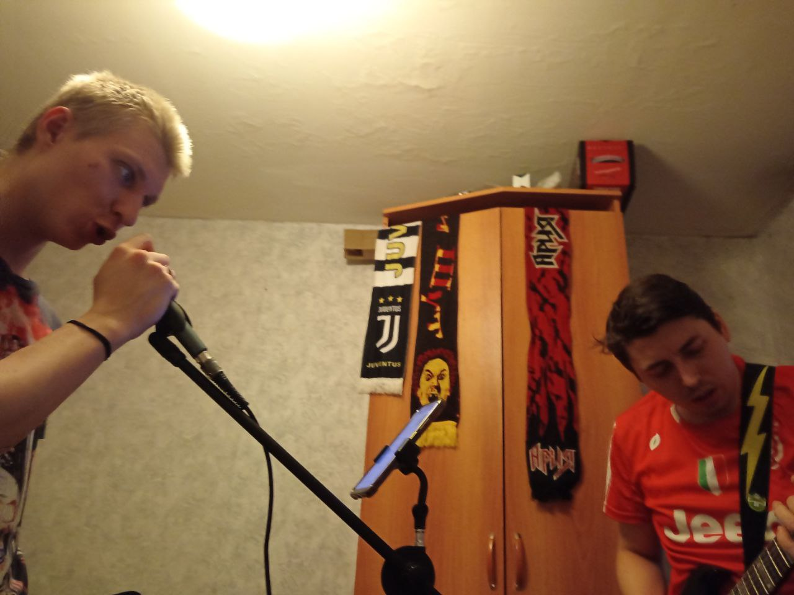
📸 Ковбой и Птеро — новая эра.17) В новом составе группа продолжила творческую деятельность. Ковбой приобрел звуковую карту Focusrite Scarlett Solo 3rd Gen и объявил о создании собственной студии звукозаписи "Голден Мьюзик Рекордс". В этот период Ковбой и Птеро записали четыре новые песни, включая "Юрский Движ (Голден Мьюзик Рекордс)" и "Рейнджер Страж (Golden music records)", которые представлены на их сайте okay-band.ru. Птеро выступил в качестве вокалиста в "Корпусе Смерти Крига" и "Изумрудном Городе", а также как бэк-вокалист в "Юрском Движе" и "Рейнджер Страже". Ковбой переработал "Корпус Смерти Крига" в стиле Супер Панк, самостоятельно записав партии бас-гитары и гитары. Параллельно с этим развивались и другие истории, связанные с бывшими и нынешними участниками "Окей". Павел после ухода основал акустический дуэт "Не В Ноту", а позже присоединился к организации "Твоя Группа", куда временно уходил и Леха Панк.
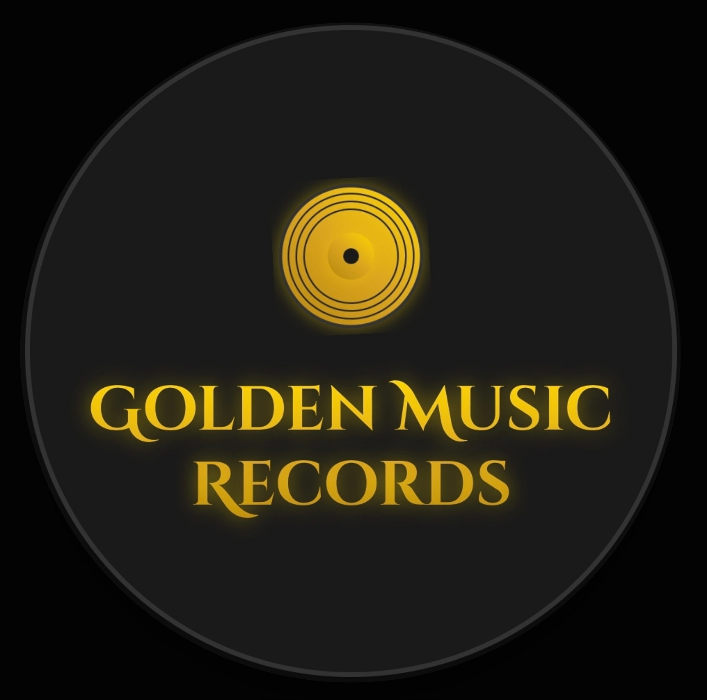
📸 Студия "Голден Мьюзик Рекордс".18) В августе 2025 года в группе «Окей» начался новый виток. Птеро позвал на бас Томаса — чувака с твёрдой рукой и правильным слухом. А Ковбой, в свою очередь, завербовал Хельгу — барабанщицу, чьи удары сразу вписались в ритм Супер Панка. Планировалось выступать пятёркой, но в конце августа всё пошло по-другому.
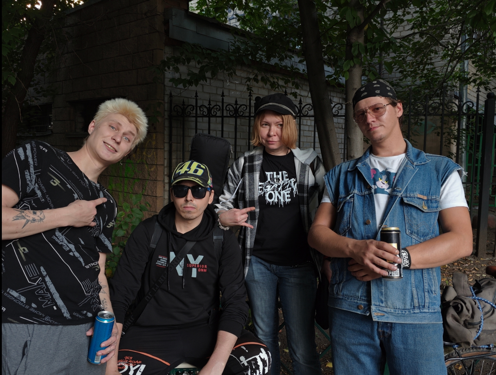
📸 Ковбой, Птеро, Томас, Хельга — август 2025.19) Первое выступление в обновлённом составе (Ковбой, Птеро, Томас, Хельга) состоялось 6 сентября 2025 года на Covёr Event в Jackson's bar. Именно после этого события появились первые плакаты и спецкарточки — чтобы отблагодарить тех, кто пришёл и поддержал.
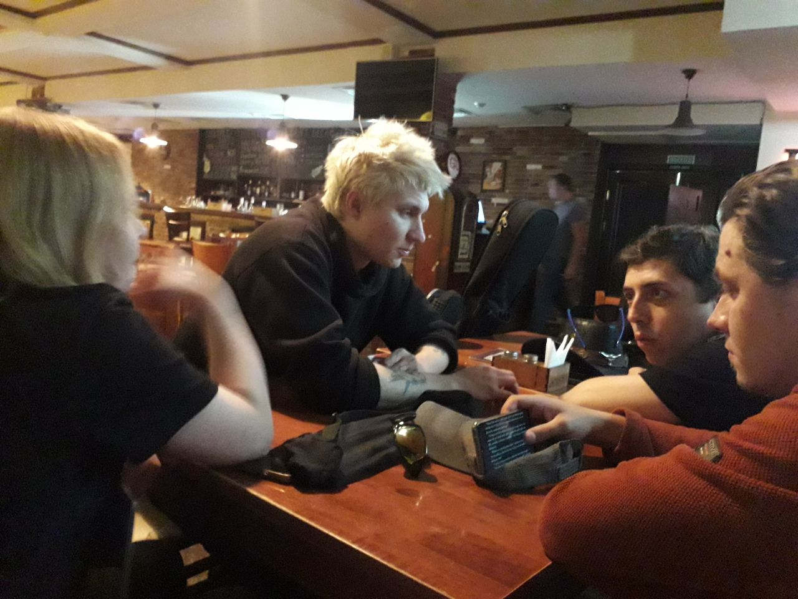
📸 Covёr Event, Jackson's bar, 6 сентября 2025.20) 10 октября 2025 года «Окей» сыграли на рок-ивенте в клубе Б25 на Свобода 2К5. Четыре группы, зал под завязку в начале — и шесть песен без оглядки. Но всё могло пойти не так: Хельга, наша барабанщица, не смогла прийти — у неё была генеральная репетиция в проекте «Твоя Группа» (где, к слову, ранее крутился и Лёха Панк). Ковбой быстро принял решение: Томаса посадил за кастрюли, а на бас позвал Миху Гранжа — чувака, с которым они пару раз репетировали у Ковбоя на хате ещё в 2023-м, но на сцене до этого никогда не играли вместе. Птеро сначала впал в ступор, но потом обрадовался: «Главное, что на басу не мне играть!» Сыграли чётко. Зал оценил.
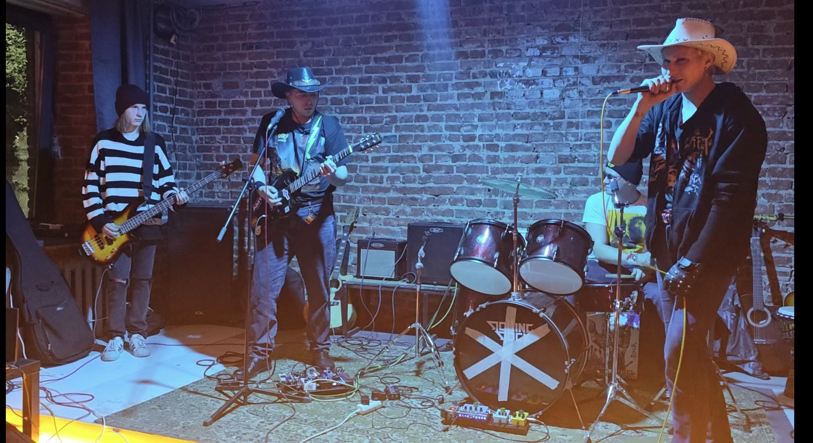
📸 Рок-эвент, Свобода 2К5, 10 октября 2025.21) Ноябрь и Декабрь выдались аккустическими для группы. "Гитарник пятница вечер" на Кирова 19 и два квартирника в Плэйпабе-вынужденная мера, так как Окей остались без барабанщика. Это своего рода погружение в атмосферу самых первых выступлений! Так же состав усилил Александр"Клаус" в роли второго гитариста! Его Ibanez rg 320 и электроакустический Мартинез заметно добавили плотности.Клаус стал автором новой песни коллектива под названием"Зима". Спустя пару месяцев, он тоже покидает состав...
 📸 Окейнофото
📸 Окейнофото
22) Коллективу «Окей» требовалась новая опора в ритм-секции. В январе на помощь пришёл Лёха Снайпер - музыкант, давно знакомый по челябинской сцене. Он сразу предложил занять место за барабанами, несмотря на то, что до этого был известен как гитарист. Его решение стало не экспериментом ради разнообразия, а осознанным шагом вперёд: он хотел вписаться в звучание «Супер Панка», а не просто заменить ушедшего участника.
23) Параллельно Птеро установил контакт с площадкой «ЧЧ Лаунч». Там группа провела несколько репетиций, используя пространство как временную базу. Акустика была далёка от идеала, но главное - там можно было работать без давления, пробовать новые расстановки и готовиться к выступлениям в условиях, близких к реальным.
24) Именно в этот период Птеро предложил Олегу Озерову идею совместного мероприятия в «ЧЧ Лаунче». Предложение было принято, и вскоре родился «Ozerov Fest» — событие, задуманное не как очередной сбор групп, а как попытка создать честную, рабочую площадку для тех, кто играет по-настоящемему.
25) Первым публичным испытанием нового состава стало одиннадцатое выступление «Окей». На сцене стояли Ковбой Раф Евро (гитара), Птеро (вокал, гитара), Томас (бас) и Снайпер (ударные). Никаких промежуточных этапов - только результат. Звук, драйв и дисциплина. Группа больше не искала себя. Она просто играла.
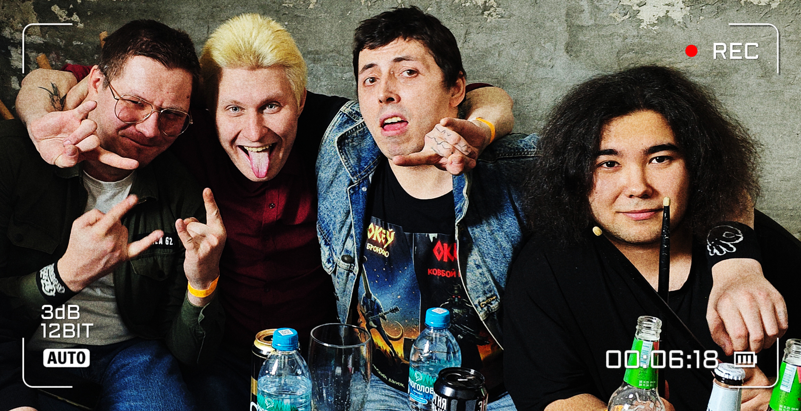
📸 Ozerov Fest!!!(гримёрка ЧЧ Лаунча)26) Далее снова Б25, куда к слову в тот вечер заехал блогер из Магнитогорска! Владислайв " Видео немного спонтанного характера. Изначально я ехал в Челябинск на совершенно другой фест, планировавшийся на 31-е число (конечно же, в Оззе, ещё и метал-гиг). Но когда я приехал 30-го числа, то понял, что по времени успеваю на попасть на площадку, которую хотел посетить уже достаточно давно. Как итог получился вполне себе хороший разогрев перед Большим Гигом в Оззе. Или как я называю подобные Творческие Мероприятия - Разгрузочный Вечер. Признаюсь, не самая моя лучшая операторская работа, всё-таки я на тот момент только приехал, а маршрут Магнитогорск-Челябинск считается коротким лишь в масштабах Нашей Большой и Необъятной Страны, но по факту всё равно выматывает. Хорошо, что качество музыкального материала от этого нисколько не просело, и те три коллектива, что выступили в тот вечер - яркое тому подтверждение. Желаю и Вам насладиться творчеством сих замечательных исполнителей в преддверии Большого Владислайва по Большому Метал-Гигу. Собственно, в ближайшее время я за него и сяду) А в Б25 я ещё обязательно вернусь. Когда-нибудь)))". Таким образом в Магнитогорске появился Океевец!
27) #13, состоящее из, 6 песен: 1) Изумрудный Город, 2) Ковбойская, 3) Корпус Смерти Крига, 4) Юрский Движ, 5) Душа Ковбоя, 6) Рейнджер Страж, прошло на мероприятие приуроченному к ДР Озерова Олега! Именно эти песни, являются авангардом дискографии Окей, выкованные на репетициях и сцене!!!